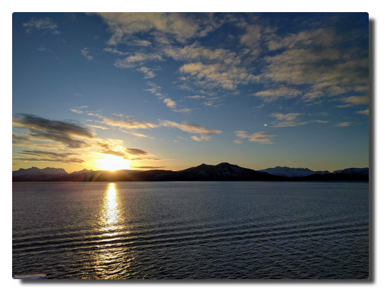

NoN: v0.7 release
Search and Popovers
The latest release of my GTK+ client for Nikola features a brand-new search function and some GUI enhancements.
NEW: search function
This is quite self-explanatory: you can find strings in posts, pages and listings.

NEW: Popovers
All menus and context menus are GtkPopovers or GtkPopoverMenus now to follow the guidelines and for a better desktop integration. Popovers do not extend the main window's dimensions like menus sometimes do. They look better as they are larger and point to their parent widget/origin (so right-click context menus do not appear kind of 'lost' on the screen anymore).

There is also a new Popover hiding behind the "Status" button which displays the output of nikola status.
This helps to show and resolve errors and warnings which may occur p.e. due to Nikola upgrade.
Changelog
-
Fixes:
- all issues regarding non-flat file structure
- get paths and extensions for posts and pages from conf.py so files are shown that are stored aside from the default folder structure
- remove tags/categories with zero occurences
- quit preview if other menu items are clicked
- return from console to main window after command execution is done
-
New:
- search function: find strings in posts, pages and listings
- menu button to open application config file
-
Updates:
- all menus are Popovers/PopoverMenus now
- localization strings
- screenshots
Love Boat - The Real Story. Seetag
Tag 14. Heimkehr
Seetag
 |
|---|
| Deck 11 mit Joggingparcours (rutschfest) |
Die letzte Gelegenheit für Verabschiedungen und Seekrankheit. Ich drehe die übliche Morgenrunde und mache noch ein paar GoPro-Aufnahmen. Es ist seltsam anmutende Gewissheit, dass man die Leute alle nie wieder sehen wird, aber ich bin auch froh, endlich mal wieder meine Ruhe haben und meinen eigenen Rhythmus leben zu können.
Das Deck ist gegen Mittag völlig überfüllt. Alle sitzen in Decken gehüllt draußen und genießen die Sonne. Dazu gibt es mal wieder eine Pooldeckaktion, das heißt, es wird gefressen und einer der sympathischeren Unterhaltungsbeauftragten, René, moderiert routiniert weg, was gerade anliegt, in diesem Fall irgendwas mit Wichtelgeschenken.
Auch wenn ich auch gern noch etwas Sonne genossen hätte, treibt mich die Masse an Menschen zunächst erstmal ins Innere. Da wird sich doch nicht gerade ein kleiner Lagerkoller in meinem Kopf ausbreiten? Ach nein, ich bin einfach nur regulär genervt über jeden und alles und überhaupt war die Reise mindestens zwei Wochen zu kurz!
Am Abend kippen wir noch die Flasche Prosecco, die sich K. und M. am zweiten Tag ertanzt haben und die Mädels anschließend noch ein letztes Getränk in der AIDA Bar.
Abschied
 |
|---|
| Heavy load. |
Am Morgen herrscht geschäftiges Treiben überall. Jeder musste früh raus, das Gepäck wird in den Gängen eingesammelt, ein letztes Frühstück, ein letzter Kaffee in der AIDA Bar, während wir auf die Gepäckfreigabe warten.
Als wir von Bord gehen, kommen uns schon die nächsten entgegen. Es wird geladen - Menschen, Ladung, Treibstoff - heute abend geht es wieder los.
Epilog
M. fährt mich nach Hause. Es ist Samstag Mittag und Berlin ist auf den Beinen. Es hupt. Ach ja, Berliner Straßenverkehr: Platz da, hier komm icke! Ich laufe die letzten paar Meter bis zur Haustür, sehe ein paar Gestalten in Hochwasserhosen und übergroßen Filzmänteln. Mein Gehörgang wird ohne Vorwarnung getroffen von dem dämlichen, lauten "you know, you know...like, like, you know"-Englisch der kaliformischen Expats. Was hab ich es vermisst...
 |
|---|
| This is the end. |
Heute Abend gibts Schawarma von Al Safa. Dann schreibe ich meinen Reisebericht und danach warten 75 GB GoPro-Material auf ihre Sichtung.
Ha det bra!
Love Boat - The Real Story. Bergen
Tag 13. Die Stadt des Regens
 |
|---|
| Boot und Bergen |
Bei schönstem Sonnenschein fahren wir langsam in die Fjorde ein und legen gelassen in Bergen an. Wir haben nur ein paar Stunden Aufenthalt und da die jeder so gut wie möglich nutzen möchte, stürmen die Passagiere fluchtartig von Bord, sobald auf Deck 3 die Planke ausgefahren ist.
 |
|---|
| 11th deck is best deck. |
Regenfakten
Wie ist das denn jetzt mit dem Regen in Bergen? Einerseits heißt es, Bergen wäre die regenreichste Stadt Europas, dann wieder erzählen reproduzierbar Guides, darauf solle man nicht so viel geben, in Halle (Saale) würde es ja viel mehr regnen. Ja was denn nun?
Regentage und Regenmenge
In Bergen regnet es häufig. Auch wenn es in anderen europäischen Städten vergleichbar häufig oder gar an noch mehr Tagen im Jahr regnet, es regnet dann auch noch viel.
Bergen ist mengenmäßig die regenreichste Stadt Europas und damit zehntregenreichste Stadt weltweit. Die durchschnittliche Niederschlagsmenge beträgt 2.250 mm pro Jahr. Andere regenreiche Städte wie etwa Glasgow kommen mit mehr Regentagen (etwa 260) auf gerade mal etwas über 1.000 mm Niederschlagsmenge.
Wie ist das denn jetzt mit Halle?
Regen verhält sich zu Halle wie Spinat zu Eisen. Einmal hat sich irgendwo eine falsche Zahl eingeschlichen und zack: für immer im Regen stehen. Dass Halle die regenreichste Stadt Deutschlands oder gar Europas sein soll, erweist sich nach kurzer Suche als eine klassische Falschmeldung.
Die Quelle dieses Gerüchts ist vermutlich diese Statistik aus dem Jahr 2004, in der Halle a.d. Saale alle Städte der britischen Inseln hinter sich lässt und das, obwohl sich die Stadt im Regenschatten des Harz befindet. Sowohl die Anzahl der angeblichen Regentage stimmt nicht, auch die Regenmenge ist mit unter 500 mm pro Jahr deutschlandweit unterdurchschnittlich.
Today I learned:
Bergen IST die regenreichste Stadt Europas und wer das von Halle an der Saale behauptet, ist Fakenews aufgesessen!
Links
- Mitteldeutsche Zeitung: Hartnäckiges Gerücht Halle ist angeblich die regenreichste Stadt Deutschlands
- statista: Europäische Städte mit den meisten Regentagen im Jahr 2004
- statista: Die regenreichsten Städte Deutschlands
- [w] wie wissen: Regenmythen
- Wikipedia: Bergen (siehe Klimatabelle)
- [Wikipedia: Halle (Saale) (
- TOP 10 der regenreichsten Städte der Welt
- holiday-weather.com: Glasgow avarages
 |
|---|
| Auch mal nach unten schauen... |
Fløyen
Mein gebuchter Ausflug wurde abgesagt. Für den geplanten Spaziergang auf dem Fløyberg hatten sich nicht genügend Leute gefunden. Damit habe ich eine Ausflugsquote von 1:3. Die Nordkapbesichtigung hatte glücklicherweise geklappt, die Trollfjordbootsfahrt leider nicht, da wir Sortland nicht anfahren konnten und nun das.
Eine kurze Recherche später entschließe ich mich dazu, den Fußmarsch einfach allein auf mich zu nehmen (Walk like a Norwegian up Floyen in Bergen). Ich laufe also los Richtung Innenstadt, ein wenig ziellos hin und her, um dann grob in Richtung Berg eingzuschlagen. Das ist auch nicht allzu kompliziert, da Bergen von sieben Hügeln umgeben ist, es also in jede Richtung irgendwo nach oben geht.
 |
|---|
| *Nur echt mit Möwe: Denkmal dem Dichter Ludvig Holberg zu Ehren. |
Ich schlage also einen südöstlichen Wanderweg nach oben ein und auf halber Strecke fällt mir ein, dass ich eine wirklich gute Gelegenheit verpasst habe, Strava anzuwerfen. Irgendwann treffe ich auf den offiziellen Weg nach oben, auf dem viele Menschen in beide Richtungen unterwegs sind. Manche behaupten, ich hätte einen ziemlich schnellen Laufschritt. Diese Leute haben noch keine Norweger laufen sehen. Generell habe ich in der letzten Woche so viele Leute Hügel hoch- und herunterjoggen gesehen, dass ich zu der Überzeugung gelangt bin, dass die Norweger ein sportbesessenes Volk sind. Hört auf, so fucking sympathisch zu sein, sonst komme ich wieder!
Ankes Tipp
Der Spaziergang hoch zum Fløyberg erfordert passendes Schuhwerk und ein wenig grundlegende Kondition, es sind schließlich 320 Höhenmeter bis zur Aussichtsplattform. Man sollte etwa 1,5 Stunden für den Aufstieg einplanen. Da, wenn man nicht auf einer ausgeschilderten Route unterwegs ist, gelegentlich in Sackgassen landet, ist es hilfreich, eine Karten-App zur Hand zu haben.
 |
|---|
 |
 |
| Jump around. 1004 km bis Berlin, 3 m bis zum Raucherbereich. Hanggrün. |
Bye bye, Bergen
 |
|---|
| Der Sonnenuntergang macht Drama. Ja, ich möchte auch gern noch bleiben... |
Am Abend verlassen wir Bergen und es manifestiert sich die Gewissheit, dass wir nun fast schon zu Hause sind. Wir gehen in die Bar und später für etwas Frischluft an Deck. Am Horizont winkt uns ein letztes mal schemenhaft das Polarlicht zum Abschied zu. Genug mit dem Kitsch jetzt.
Love Boat - The Real Story. Bye Trondheim
Tag 12. Trondheim
Da mein Strava-Spaziergang dann doch optisch nicht so der Brüller war (wir waren einfach zu schnell), wollte ich das heute während des Liegens im Hafen mit einer Laufrunde nachholen. Doch ich hatte die Rechnung ohne die gesperrten Decks gemacht. Gut, dann schaue ich mir eben das triste Trondheimer Hafengelände an, macht ja auch nichts.
Souvenirjagd
Nach dem Frühstück geht es erneut in die Stadt. Ich drehe noch eine große Runde auch hoch zur Kristiansten festning, von der aus man angeblich einen großartigen Blick auf die vorgelagerte Insel Munkholmen mit seinem ehemaligen Kloster/Festung/Gefängnis. Falls man nur deswegen dort hoch geht, kann man sich das sparen, vom Schiff aus hatte man einen Premiumblick in dieser Hinsicht.
Als Souvenirshop habe ich einen Laden der Supermarktkette Rema 1000 auserkoren. Ich kaufe mehr Brunost, Lefsegodt und Tubenkäse, so viel ich tragen kann. Ich meine, ein Grinsen im Gesicht der Kassierin gesehen zu haben. Du må ikke dømme meg, jeg trenger bringe suvenirer til venner mine tilbake i Tyskland.
 |
|---|
| Souvenirs |
Gegenteiltag
Ein Typ fährt mit dem Rad vor den Supermarkt, steigt ab, lehnt das Rad an und geht hinein. Mein Gehirn kann das nicht verarbeiten.
 |
|---|
| WTF |
Alle an Bord
Um 14 Uhr soll es weitergehen nach Bergen, doch durch den starken anlandigen Wind ist es uns nicht möglich abzulegen. Angesichts der vergangenen Tage unken die ersten bereits, dass auch Bergen für uns wohl ins Wasser fallen würde. Gegen 16 Uhr erwischt die Brücke das langersehnte kurze Abflauen des Windes und wir sind frei und werden voraussichtlich pünktlich in Bergen ankommen.
 |
|---|
| Sind wir noch da? |
Geh mir weg
Auf einem Kreuzfahrtschiff wird man mit verschiedenen Grenzen seiner Komfortzone konfrontiert. Da wäre zum einen die offensichtlichste: Wasser. Davon abgeleitet ergibt sich die zweite: die Einschränkung der Bewegungsfreiheit. Ebenfalls eine Folge daraus ist der Überdruss an den anderen Menschen. Dieser Zustand hat sich glücklicherweise erst in den letzten Tagen der Reise bei mir eingestellt.
Als Passagier hat man im Gegensatz zur Crew viel Freizeit. Aber korrektes Freizeiten will gelernt sein. Neben dem physiologisch inaktiven Freizeiten wie lesen, zuhören, schauen und essen bleibt noch das Yang, das physiologisch aktive Freizeiten. Dies ist limitiert auf das Sportstudio und das Herumlaufen auf dem Schiff. Der Mensch ist rundherum ein Gewohnheitstier und so adaptierte ich schnell gewisse Gewohnheiten. Aber nicht nur ich.
The Hunger Game
Ein Grund für den exzessiven Bewegungsdrang ist die bis auf kurze Pausen vorhandene Präsenz von Essen. Man möchte annehmen, dass dies aufgrund dieser Umstände eine periphäre Angelegenheit wäre. Zu meiner Überraschung ist dem nicht so. Ab 7 Uhr gibt es Frühstück, ab 6:45 Uhr sammeln sich Leute vor dem Restaurant. Ab 11:00 Uhr gibt es eine Themenaktion auf dem Pooldeck und das Pooldeck ist voller Menschen, die nach dem Themen-Snack anstehen. Um 12:30 Uhr öffnen die Pforten zum Mittagessen, ab 12:15 Uhr stehen Leute vor dem Restaurant. Gegen 12:20 Uhr leert sich langsam die bis dahin vollbesetzte AIDA Bar, ergänzt durch Durchlaufverkehr in Heck-Richtung. Dasselbe findet noch einmal um 18:00 Uhr statt. Ebbe und Flut. Dazwischen grast der Heuschreckenschwarm noch Kaffee und Kuchen im Calypso ab (siehe Tag 2). Sind das eigentlich immer dieselben Menschen, die ganz offensichtlich mehrmals täglich kurz vor dem Hungertod stehen?
Aus dieser Beobachtung bzw. Erfahrung folgt auch, dass sich das Zeitfenster der Nahrungsaufnahme absurderweise immens verkleinert, wenn man zum einen einen Sitzplatz bekommen möchte und zum anderen zur Stressvermeidung (wir sind schließlich im Urlaub hier) einem großen Andrang am Buffet entgehen möchte.
AIDA-Feedback
Ich weiß nicht, ob man diesen Konflikt auflösen kann, schließlich kann man die Menschen nicht ändern. Aus persönlicher Sicht und ohne die Erwartungshaltung meiner Mitreisenden zu kennen, würde ich behaupten, dass das Kaffee- und Kuchen-Buffet und die Poolaktionen am Tage überflüssig sind.
Love Boat - The Real Story. Trondheim
Tag 11. Vakker byen
Wir sind seit eineinhalb Tagen auf See und das Schiff wird kleiner. Gerade bei schwerem Seegang ist die Bewegungsfreiheit stark eingeschränkt, weil dann die Außendecks zum großen Teil gesperrt sind (Deck 6 und 11, Deck 10 nur ein paar Meter neben den Türen zum Luft schnappen offen). Morgens schwinge ich mich also in das Hamsterrad auf Deck 9 und nach der verdienten Dusche noch auf einen Morgenspaziergang nach draußen. Also: - aus der Kabine raus, eine Etage nach oben laufen, Staubsaugercrew grüßen - auf Deck 6 raus und eine Runde herumlaufen (oder zwei), die Außendeckwartungscrewleute grüßen (halten die mich inzwischen für bescheuert?) - die Treppe am Heck nehmen, an der Ocean Bar vorbei, andere Seite weiter nach oben, am Calypso auf Deck 9 vorbei und weiter nach oben - Deck 10, die Raucher bei Morgenkippe und -kaffee grüßen, einmal am Pooldeck rum, Aufräumcrew grüßen (halten die mich...?) - Treppe nach Deck 11 nehmen, mindestens zwei Runden drehen mit Abstecher nach Deck 12 - das Ganze wieder zurück Wie ein Knasti auf Hofgang.
Am Abend machen wir endlich in Trondheim fest und werden bis zum frühen Nachmittag bleiben. Der stürmische Seetag hat alle landhungrig gemacht und so entern nach dem Abendessen Scharen von Passagieren und einige Leute von der Crew die fast leere Stadt.
 |
|---|
| Nidarosdomen |
Wo sind wir hier eigentlich?
Wir gehen Richtung Innenstadt, vorbei am illuminierten Nidarosdomen, über Brücken und hin und her. Seltsam erscheint uns die Vertrautheit der Stadt. Während bisher die Ort- und Landschaften sehr andersartig waren, erinnert Trondheim im Stil straßenzugweise mehreren von uns unabhängig voneinander an die Stadt Potsdam. Es ist so seltsam, dass wir an manchen Stellen stehen bleiben und völlig verblüfft sind. Davon abgesehen, dass Trondheim und Potsdam keine direkte Verbindung miteinander haben, gibt es doch einige Parallelen, die dieses Trugbild und die Konvergenz bei der städtischen Entwicklung fördern: * beide Städte sind quasi gleich alt * sie sind vergleichbar groß in der Einwohnerzahl * sie sind von viel Wasser umgeben * sie verfügen über ein Straßenbahnnetz * sie gelten als Kulturstädte * Trondheim war lange Hauptstadt des Landes, Potsdam offizielle Residenzstadt des Königreich Preußen
 |
|---|
 |
| Trondheims nette Ecken |
Absacker
Nach der Rückkehr zum Schiff machen wir Pläne für den nächsten Tag und verabreden uns in der AIDA Bar. Die Schiffsband spielt Klassiker mit Crewmitgliedern und wir trinken Bier. Ich habe den Trollfjord schon vergessen.
 |
|---|
 |
| Tagesplaner im Bordportal und tägliche Info in Papierform |
Love Boat - The Real Story. Tromsø
Tag 8. Tromsø rain, Tromsø rain
Mittags erreichen wir den Hafen der größten nordnorwegischen Stadt Tromsø, wo wir einen ganzen Tag Aufenthalt genießen. Vom Liegeplatz bis in die Innenstadt ist ein Busshuttle eingerichtet.
 |
|---|
| Empfang! |
Ich laufe durch die Stadt, überquere natürlich die Tromsøbrua (Tromsøbrücke) bis zur Ishavskatedralen (Eismeerkathedrale).
Es regnet bei Temperaturen deutlich über dem Gefrierpunkt und der komprimierte Schnee hat sich durch wiederholtes Antauen und Gefrieren in dicke Eisplatten verwandelt, die nun abtauen. Man läuft also auf wasserbedecktem Eis, das von tiefen Pfützen umrahmt wird, die von schnell fließendem Schmelzwasser genährt werden. Am Abend sind meine Schuhe durch.
Die vertagte Polarkreistaufe wird nun heute nachgeholt, wegen des Regens allerdings nicht auf dem Pooldeck, sondern in der AIDA Bar. Manche dieser Aktionen lassen erahnen, wie ballermanesk es beim schwimmenden Cluburlaub sonst üblicherweise zugeht. Ich verziehe mich alsbald.
Ein Teil unserer Reisegruppe geht später noch ins Konzert in die Eismeerkathedrale und ich früh zu Bett.
 |
|---|
 |
 |
| Alles ganz schön hier und andere Reedereien haben auch schöne Schiffe (Ja, das ist die "Viking Sky"). |
Tag 9. Sortland calling
Es regnet. Wir liegen immer noch in Tromsø und ich bin mal wieder in der Stadt unterwegs. Ich kaufe Postkarten, die ich beim nächsten Landgang einwerfen möchte. Es regnet.
Wir legen ab mit Ziel Sortland. Ich verbringe den Nachmittag mit Kaffee, Kreuzworträtsel und Kartenschreiben. Bester Urlaub aller Zeiten.
Tag 10. A storm is coming
Der Wecker klingelt in aller Früh', denn mein Landausflug zum Trollfjord geht um 8:00 Uhr los. Ich sitze mit anderen Ausflüglern am Frühstückstisch und wir verabreden uns für später. Nun, kurz vor 9 Uhr wird klar: es wird keinen Trollfjord geben. Es wird kein Sortland geben.
Wegen des Seegangs und des Windes können wir nicht in Sortland anlegen und erfahren im Laufe des Vormittags, dass wir einen vorgezogenen Seetag einlegen und direkt nach Trondheim durchfahren. Das Schiff rollt sich gemächlich durch den Atlantik und fordert zahlreiche Opfer, die in ihren Kabinen ausharren, bis es besser wird. Freie Platzwahl in den Bars.
In mir verbreitet sich eine leicht sentimentale Stimmung. Mehr als die Hälfte der Reise liegt hinter uns, wir fahren südwärts, es liegen nur noch zwei Stopps vor uns, bevor es in einer weiteren Tagesreise zurück nach Hamburg geht.
Mein Gehirn kann den Gedanken noch nicht ganz verarbeiten, dass in wenigen Tagen, nachdem man für zwei Wochen auf diesem Schiff mit hunderten von Menschen zusammengepfercht war und jeden Tag dieselben Leute gegrüßt und mit einigen einen kurzen Schwatz auf dem Flur gehalten hat (Hello Katrina!) die Wahrscheinlichkeit gegen Null geht, irgendjemanden von ihnen jemals wieder zu sehen. Die Gäste fahren nach Hause und machen da weiter, wo sie vor Hamburg aufgehört haben und die Crew sieht für zwei Wochen die nächsten Gesichter und macht da weiter, wo sie vor Hamburg aufgehört hat, nämlich sich ohne Unterlass den Arsch abzurackern (Kudos to all of you).
In diesem Zusammenhang erscheint es bizarr, Verkumpelungsversuche bei Gästen zu sehen. Wie funktioniert das? Machen die so häufig Kreuzfahrten, dass die immer wieder den gleichen Crew-Leuten über den Weg laufen? Ich kenne solche freundschaftlichen Annäherungsversuche aus meiner eigenen Tätigkeit im Kundenservice. Es liegt in der Natur der Sache, mit einigen Menschen näher auf einer Sympathieebene zu sein als mit anderen. Und bei diesen ist man auch zu einem gewissen Grad bereit, auf einer persönlicheren Ebene zu kommunizieren, ohne dabei die Grenze der Professionalität zu überschreiten.
Auf einem Kreuzfahrtschiff ist die Situation völlig zugespitzt. Als Gast mache ich vielleicht die Reise meines Lebens, bei der jeder Tag aufregend ist. Für die anderen Gäste bist du der nervende Nachbar mit dem komischen Dialekt oder der nette Zufallsgesprächspartner beim morgendlichen Rundgang an Deck. Für die Crew bist du diejenige, die für zwei Wochen ihre Klamotten auf dem Sofa in der Kabine verteilt, in den nächtlichen Morgenstunden durch das Schiff schlendert und an der Bar Ipanema ohne Zucker und noch mehr Espresso trinkt. Bis die nächsten kommen.
Love Boat - The Real Story. Honningsvåg
Tag 6. Das Ende der Welt
Der vergangene lange Tag bringen mich dazu, bis 7 Uhr auszuschlafen. Wir werden noch bis zum Abend auf See unterwegs sein und dann im Hafen von Honningsvåg übernachten.
Alle sind nach den Erlebnissen bester Stimmung. In unserer Reisegruppe ist aktuell niemand seekrank und auch unser Jüngster scheint sich nach Anlaufschwierigkeiten etwas eingelebt zu haben, er klatscht zum Frühstück das Personal ab und verabredet sich für später im Kids Club.
 |
|---|
| Nordkapumfahrung in mystischem Licht |
Am Nachmittag passieren wir das Nordkap bei Sonnenuntergang. Die Sicht ist klar und man kann von weitem die Nordkaphalle und den Globus sehen. Ich stehe fast eine Stunde auf Deck 6 und genieße die Aussicht.
Später wird es windig und es schneit. Die nächtlichen Nordkaplandausflüge werden abgesagt, weil die Straße aufgrund des Schneegestöbers nicht freigegeben ist. Ob der Ausflug morgen klappt, ist noch unsicher.
K. und ich schlendern durch das leere Honningsvåg. Wir schauen uns genauer das Schiff an und sehen: hinter unseren Kabinen befindet sich der Crew-Nachtclub, das erklärt einiges...
 |
|---|
| Honningsvåg im Schnee. Ein Schiff. |
Dann grüne Schleier. Polarlichter. Als wir aufs Schiff zurückkehren, geht das Spektakel richtig los. Grüne, auch ein wenig rote Nordlichter tanzen stundenlang für uns am Himmel.
 |
|---|
 |
| Not all heros wear capes. Bamse, the canine war hero. |
Tag 7. Nordkapp
Es liegen zwei perfekte Polarlichtkreuzfahrttage hinter uns. Alles, was nun noch folgt, ist nur noch Deko auf dem Sahnehäubchen.
Es geht auf zum Landausflug zum Nordkap, das wir bereits gestern von der Wasserseite zu sehen bekamen. Dort oben war es kalt und windig und die Sicht war klar und so war der Ort auch ohne Mitternachtssonne definitiv den Besuch wert.
 |
|---|
| Hilsener fra Nordkapp! Touristenlevel over 9000! |
Gegen Abend wird der Seegang wieder rauher und so lasse ich den Tag gemütlich in der AIDA Bar ausklingen.
 |
|---|
| Es ist alles so furchtbar... |
Love Boat - The Real Story. Bodø
Tag 5. Land in sight
The day starts with an early workout. When the ship is close to the second harbour Bodø we are presented with a breathtaking panorama view. This day promises to become great.
|  |
|---|
| Postcard motif |
After the last, turbulent night the passengers cannot wait to leave the boat. Excursion busses are standing right in front of the ship and our little tourist party prepares for the usual walk into the town.
We were "warned" in advance by other passengers that Bodø is such an ugly town. The cause of that condition is their almost complete destruction in an air strike by the German Luftwaffe in 1940. Many houses have been replaced by more untraditional buildings and therefore the central pedrestrian area looks similar to their German counterparts.
In a travel report I read afterwards the author was downright outraged to have been forced to stop at this unsightly place. This really has made me angry: so do you want to experience the country or not? Norway like the rest of the world is no fairyland and has more to offer than beautiful landscapes and overpriced sledge dog trips for tourists.
If you open your eyes a little you can discover interesting sites even in Bodø like the local pieces of streetart.
 |
|---|
| Streetart: "Malstrøm" by David de la Mano |
On our exploratory walk I spot a supermarket - it's time to prove my Norwegian language skills and buy some local specialities: brunost (brown cheese) and lefsegodt (soft pastry with a kind of cream cheese).
 |
|---|
| A German walks by a Norwegian kiosk. Hitler. ROFL. (slightly out of focus) |
In the afternoon I go for a walk again, enjoy the unbeknown surroundings just to be back on board in time for dinner.
 |
|---|
| Pretty corners in Bodø |
Cast off, we are sailing north!
Anke's anecdotic tip
I love walking around but from the third day on I missed riding my bike. It somehow crossed my mind: You should have taken a folding bike with you. Each passenger can check in with two large pieces of luggage. If you get along with one like me it should not be problematic to take an adequately packaged folding bike (± 12 kg) on the trip. That would significantly increase the range of motion on land.
The night of nights
The evening starts quiet. This will change within a short period of time. Since experiencing the difficult weather conditions on the second day we have become addicted to the ship's own local web page - the bord portal - where you get information about speed, course, weather conditions and everything that happens on the ship. We are well-informed.
K. is stunned: she spotted green haze on the picture of the bow cam. M. is sent upstairs to evaluate the situation. I'm still doubtful but about to wrap up warm. We enter deck 11 which is already slightly crowded with some people and their expensive photo equipments. The sky is cloudy and the almost full moon is illuminating the ocean's surface and land masses of the Lofoten islands. This alone creates a breathtaking, mystical atmosphere.
People whisper and watch on each other's camera displays and suddenly somebody says "There it is." We stare into the sky and see: nothing.
We keep staring and start seeing the difference between clouds illuminated by the moon and diffuse haze. Yes, the hazes are greenish and slightly moving. So this should be it?
We remain outside in this winter night staring into the night sky. The clouds slowly dissolve. The weather forecast predicts lots of clouds and rain for the next days and somebody says "Tonight's the night of nights."
Deck 11 has awoken. The news of polar lights sightings are transmitted into steel Moby Dick. There is lively movement of people going in and out.
Tonight the sky is giving us the green light. Freezing and excitement - the loyal companions of the northern lights - stay with us until 2 o'clock in the morning.
What a great day.
Love Boat - The Real Story. Seetag
Tag 4. Ahoi!
Am Morgen treibt es mich raus und ich drehe vor dem Frühstück eine Runde an Deck. In der Anytime Bar gibt es Kaffee für Frühaufsteher. Ich grüße die herumstehenden Raucher im Vorbeigehen. Nach dem Frühstück okkupiere ich mit Buch und in Decken gehüllt eine Sofaecke draußen auf Deck 11. Es ist windig, wolkig, etwas schön, aber auch ein wenig kalt.
 |
|---|
| Die Gelbdecken demonstrieren für mehr Entspannung und besseres Wetter. |
Das Wetter wird zunehmend schlechter und so verziehe ich mich am frühen Nachmittag und suche im Inneren nach einem ruhigen Plätzchen. Dies erweist sich als gar nicht so einfach, aber die AIDA Bar kristallisiert sich aus verschiedenen Gründen als ein Hauptaufenthaltsraum heraus. Ich bin so inaktiv, dass ich das Mittagessen ausfallen lasse. Es setzt leichte Gereiztheit bei mir ein. Am Nachmittag steht wieder Edutainment auf dem Plan und der Ausflug zum Nordkap wird gebucht.
Ein Tourist tut, was ein Tourist tun muss.
Mehr Wetter
Unser Schiff wird flankiert von zwei Tiefdruckgebieten. Das Hochdruckgebiet über heimatlichen Gefilden führt zu einem regen Luftmassenaustausch zwischen den dreien, als Bonus winkt das Tiefdruckgebiet über Island uns mit schäumenden Wellen über den Atlantik zu.
Kurz: Wir haben Sturm und Wellengang. Viel. Sehr viel.
Was wir auch haben: viel Platz beim Abendessen und an der Bar. Man tänzelt so durch das inzwischen vertraute, wankende Schiff. Das Abendunterhaltungsprogramm wurde wegen des Wetters auf den nächsten Tag verlegt, Deck 6 und 11 sind aus Sicherheitsgründen gesperrt.
Wer nicht seekrank ist, verbringt seine Zeit mit Spiel, Spaß und Spannung in den Bars und träumt vom morgigen Landgang in Bodø.
Orga
Eine nicht so höfliche Möglichkeit, die Zeit auf einem wankenden Schiff zu verbringen, ist es, dem Personal beim Arbeiten zuzusehen.
Nach ein paar Tagen fällt auf: die arbeiten immer (12+ Stunden) und auch stets an den selben Positionen. Man spaziert morgens oben an Deck und der Typ, der die Poolbar öffnet, bringt dir 3 Stunden später einen Kaffee und abends ein Bier. Ich wette, der "Nice Indian Guy" legt danach noch eine Schicht im Crew-Nachtclub ein. Ist der Typ vielleicht ein Vampir...? Das gleiche in den Restaurants: die Typen, den du morgens begrüßt, begrüßt man am Abend wieder.
Und die bleiben so verdammt freundlich dabei! Ich hoffe, die bekommen alle am Monatsende einen angemessenen Batzen Kohle überwiesen, denn ansonsten kann ich so eine Reise nie wieder machen...
 |
|---|
| Das tägliche Personalkarusell in der sternförmigen AIDA Bar |
Use Markdown extensions in Nikola
Inhalt
The default markup language of input files in Nikola is restructuredText. You can, of course, configure Nikola to also process Markdown formatted files but by default there are missing some features like admonitions or table of contents which can be enabled by extensions.
Basic configuration
First things first: you have to edit the variables COMPILERS, POSTS and PAGES of the conf.py and uncomment or add a line in order to make Nikola recognize and render Markdown files:
COMPILERS = { "rest": ('.rst', '.txt'), "markdown": ('.md', '.mdown', '.markdown'), ... } POSTS = ( ("posts/*.rst", "posts", "post.tmpl"), ... ("posts/*.md", "posts", "post.tmpl"), ) PAGES = ( ("pages/*.rst", "pages", "story.tmpl"), ... ("pages/*.md", "pages", "story.tmpl"), )
Markdown extensions
There are two types of Markdown extensions:
- Officially supported extensions that are shipped with the python-markdown package.
- Third party extensions which have to be installed separately on your system.
Enable
An extension is enabled by adding it to the MARKDOWN_EXTENSIONS variable.
If you want to enable officially supported extensions you add the extensions' entry point as list item. If the extension is part of the extra folder you can use extra as list item or the name of the extension, p.e. you enable definition lists with either def_list or extra.
The list item for a third party extension is the exact dot notation (see the extension's documentation).
Examples
MARKDOWN_EXTENSIONS = [# all extensions of extra available "extra", # other officially supported extensions "admonition", "toc", # third party extension "markdown_include.include", ]
Configure
Some extensions offer configuration options. These are defined in the MARKDOWN_EXTENSIONS_CONFIGS variable. The dictionary's structure is
MARKDOWN_EXTENSIONS_CONFIGS = { DEFAULT_LANG: { "ext1": {"option1": value1, "option2": value2", }, "ext2": {"option1": value1, "option2": value2", }, ... }, "other_configured_lang": { "ext1": {"option1": value1, "option2": value3", }, ... }, }
Use
Consult the extension's documentation for details. Useful extensions:
Table of contents
- Enabled by:
- "toc"
- Usage:
Definition lists
- Enabled by:
- "extra"
- Usage:
Admonitions
- Enabled by:
- "admonition"
- Usage:
-
Common types in reST are the attention, caution, danger, error, hint, important, note, tip, and warning directives but any type can be defined (css editing may be required).
Include
- Enabled by:
- "markdown_include.include"
- Usage:
-
The input file will not be rendered if it has not been changed even if an included file was edited.
Links
- Nikola
- What is Markdown?
- Markdown extensions
- Third party extension: Markdown-Include
- What is restructuredText?
- More posts about Nikola on this site
Fun fact
This posts has been written in restructuredText.